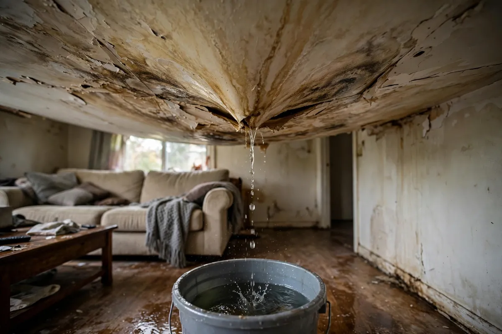

Ceiling Leak Cleanup in Hollywood, FL
Water obeys gravity, which makes ceiling leaks deceptive: the stain on your ceiling is rarely directly below the source. Water travels along joists, pipes, and the top face of drywall before it finds a weak point to drip through — sometimes rooms away from where it entered. Ceiling leak cleanup in Hollywood, FL means tracing the water back to its origin, assessing what the ceiling cavity is holding, and respecting the collapse risk that saturated drywall brings.

Understanding Ceiling Leak Cleanup in Hollywood
The two usual sources are roofing failures above and plumbing leaks from bathrooms or laundry rooms overhead. In both cases, water pools on top of the ceiling drywall and soaks the paper facing and gypsum core. Attic insulation above a leak acts as a reservoir, holding water against the drywall for days. The visible symptom — a brown stain, bubbling paint, a sagging section — typically appears well after saturation began, which is why the damage is often worse than the stain suggests.
Saturated drywall is heavy and weak. A ceiling section holding water can fail suddenly, which is why bulging or sagging areas deserve caution — don't poke at them or stand underneath. In Hollywood's older homes with plaster or multi-layer ceilings, water can travel laterally for surprising distances before showing itself. Thermal imaging is particularly useful here: wet insulation and drywall read cooler than dry surroundings, revealing the true footprint above the ceiling line.
How We Handle the Job
We start by finding the source — roof, plumbing, or HVAC condensate — because ceiling work without source control is pointless. Then the ceiling cavity is assessed: moisture meters and thermal imaging map the saturated area, which is almost always larger than the stain. Sagging sections are addressed first for safety. Wet insulation is removed since it doesn't dry in place, and drywall that has lost structural integrity is cut out. What can dry in place is dried with directed airflow; what can't is removed.
Ceilings are verified with readings taken from both sides where accessible — the attic side tells the truth about insulation and joist moisture. If the source was the roof, we coordinate timing with your roofer so the interior isn't dried before the exterior is sealed. Documentation covers the source, the full mapped area, and what was removed versus dried. Related services such as emergency water extraction, structural drying, and flood cleanup often connect to the same loss depending on conditions on site.
Local Response and Insurance Support
Searching for ceiling leak cleanup near me usually means you need help without delay. We answer emergency calls around the clock. Documentation — photos and moisture readings — supports conversations with your insurance carrier when the loss is sudden and accidental. We do not decide coverage; we provide clear technical information about the work performed.
When to Call
Call if you have active water, wet materials that are not drying, odors after a leak, or a backup that may involve contaminated water. Early action in Hollywood’s climate is almost always less disruptive than waiting. For neighborhood-specific service, see our service areas. For the full list of capabilities, visit all services.
Frequently Asked Questions
My ceiling is sagging — is it dangerous?
Treat it as if it is. Saturated drywall gains significant weight and can collapse without warning, bringing water and debris down with it. Keep people, pets, and valuables out from under the sagging area, don't puncture it to drain it, and get it assessed promptly. Controlled removal by a professional is far safer than waiting for gravity to decide.
The stain is small — can I just paint over it?
Paint hides the symptom, not the problem. A small stain often marks a larger saturated area above the ceiling, including wet insulation that keeps feeding moisture into the drywall. If the source is still active, the stain will return. Have the cavity checked with a moisture meter before any cosmetic repair.
Is it the roof or the plumbing?
That's the key question and it determines the fix. Roof leaks typically worsen with rain and appear near exterior walls or roof penetrations; plumbing leaks are steadier and often sit below bathrooms, kitchens, or laundry rooms. Sometimes it's neither — HVAC condensate lines and even condensation can mimic both. Tracing the source is part of the assessment.
Do you work with my roofer?
Yes — sequencing matters. The roof repair stops the water; the interior cleanup handles what's already inside. Drying the interior before the roof is sealed risks a repeat loss with the next rain. We document our side and coordinate timing so the two scopes don't work against each other.